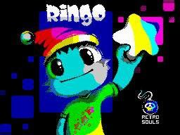
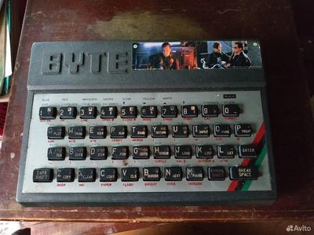

Новое видео - Принтер на ZX Spectrum
Выхожу из новгоднего анабиоза. Держите первый видос за полтора года! Всегда было интересно, как жили счастливцы, у которых на Спектруме был принтер, так что попробовал тоже попечатать.

Выхожу из новгоднего анабиоза. Держите первый видос за полтора года! Всегда было интересно, как жили счастливцы, у которых на Спектруме был принтер, так что попробовал тоже попечатать.
Дедушка Мороз мощно пополнил мою коллекцию MSX. Комп, правда, не совсем рабочий, при включении виснет при обращении к дискете. Но это выглядит решаемым. Зато стоил всего как полторы ученические Ямахи.

Принтер как Кемпстон Джойстик 😅
А посоветуйте игр, в которых используется трехкнопочный Кемпстон, вдруг играбельно 😏
Жутко атмосферное видео про "Поливокс". Тот случай, когда обзорщик ещё и играть умеет.
Завод "Вектор" нам известен как производитель компьютеров "Кворум" и "Магик". А незадолго до них там производились музыкальные синтезаторы с очень интересным звуком.
Забавно, что все отмечают брутальный вид "Поливокса". А вот у меня дома в детстве было электропианино "Мануал" производства того же "Вектора", и оно тоже будто выфрезировано из цельного куска железа. Поэтому я до сих пор уверен, что именно так синтезатор и должен выглядеть, и что это не продукция "Вектора" брутальная, а наоборот, все остальные синты какие-то слишком игрушечные 😄
https://www.youtube.com/watch?v=EqU-_kKCnZQ
Скачивание бесплатной игры через покупку за $0.00 в магазине - это зло какое-то. Но при регистрации можно вводить белиберду, активации и проверки нет никакой. Я, правда, в итоге ввел все нормально и игру купил.
Игрушка симпатичная, на Super Mario Maker чем-то похожа. Хотя там достраивание блоков - это, скорее, узаконенный чит, а тут - основа механики.
Цитируемое сообщение (оригинал в Telegram "ZX Speccy")
RINGO - новая игра для классических ZX Spectrum 128 от команды Retrosouls.
Вы играете за юного Снугла по имени Ринго, которому необходимо найти как можно больше волшебных звёзд в подземных лабиринтах сумеречной страны. Дело в том, что Снуглы используют звёзды, чтобы освещать свои жилища долгими зимними вечерами. А как известно, в полной темноте даже чашка горячего брусничного чая не приносит радости!
Скачать, играть, донатить:
20 минут кассетных развлечений от vinxru... Ой, ну то есть Алеморфа... Ой, ну то есть Алексея Морозова... Ой, нет, теперь от Лёхи 😅
Выкачиваем себе, а то вдруг автор удалит и этот канал. Контент, как обычно, топ.
https://www.youtube.com/watch?v=D2AfOoX5DNs
Когда гуглил Эксолон, но опечатался

Интересный опыт по запуску своего биоса
Цитируемое сообщение (оригинал в Telegram "dlinyj")
Хотели ли вы когда-нибудь написать свой BIOS? А BIOS вместе со встроенным BASIC? А вообще представляете как работает BIOS и как писать свои модули расширения? Уже давно у людей витает в воздухе идея сделать свой ROM BASIC и поиграться с ним, но вот прям рабочих и живых решений, по крайне мере в рунете я не встречал. В чатике Ретрокомпьютерщиков давно муссируется тема, как это сделать. И сложнее всего было не проболтаться, что я знаю как это делать и уже есть готовое решение.
И вот, настал счастливый миг, когда могу явить это решение широкой публике. Подробности в моей статье:
Пишем свой ROM BIOS
Буду рад вашим комментариям, лайкам, дополнениям.
Я когда вижу такие лоты на "Авито", у меня в голове зреет безумная идея собрать всю коллекцию наклеек из жвачки "Терминатор-2" в виде наклеек на старых спектрумах. Тут вот их сразу две, и обе, насколько мне помнится, редкие. Ну или лайт-вариант: собрать просто фото таких наклеек 😄
Очень интересная статья про портирование ScummVM (движка для квестов от Lucas Arts) на ZX Spectrum Next
{kind=link}
{kind=link}